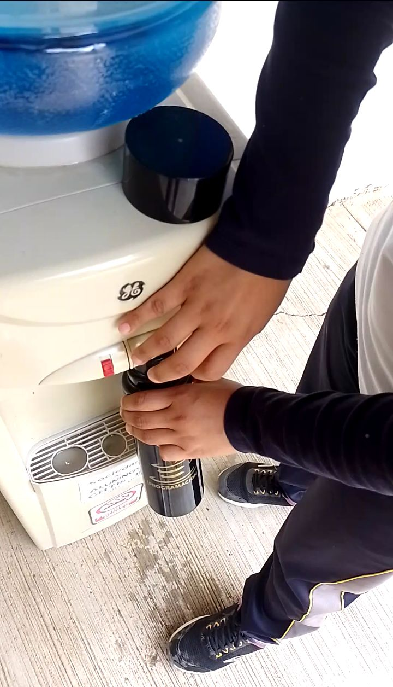
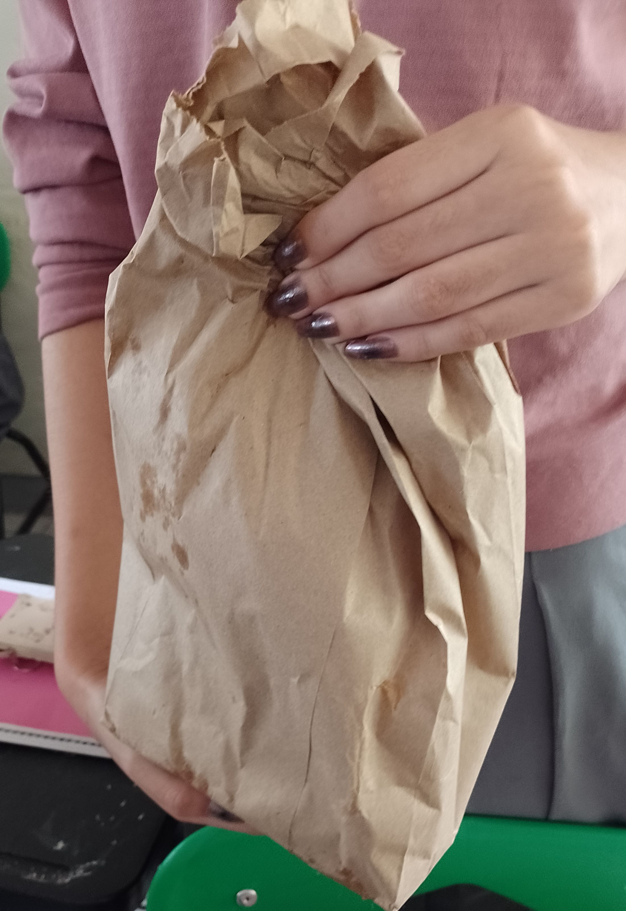
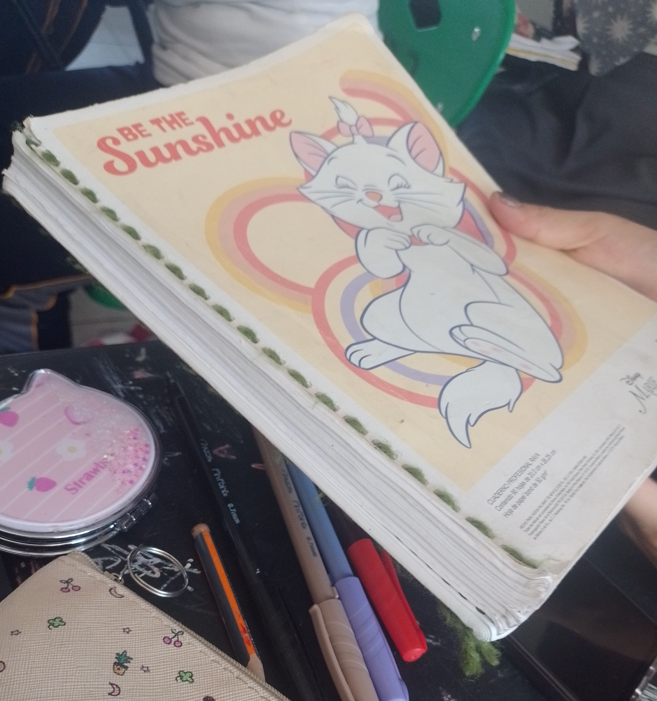

1-Alimentos
(Sección 1)
Yo consumo mis alimentos cuidado el medio ambiente: se anexa descripción del proceso que implica consumir estos alimentos, por ejemplo: En la cafetería de mi escuela los alimentos que consumo me los proporcionan en platos reutilizables esto ayuda a no generar basura y al final los deposito en un contenedor que se encuentra en diversas áreas de la escuela para ser desinfectados y volverlos a utilizar.

2-Hidratación
(Sección 2)
Yo consumo agua potable sin tener que utilizar una botella desechable. Dentro de la escuela, si me termino mi agua voy y la lleno de nuevo en mi botella de plástico reutilizable para reducir el desperdicio de plástico, ya que es una forma consciente y sostenible de consumir agua.
3-Portación de productos en bolsa ecológicas.
(Sección 3)
Yo uso bolsas de papel o tela para traer mi lonche en ella. Durante el receso, como mis alimentos y guardo la bolsa para poder utilizarla nuevamente al día siguiente o más tarde.
4-Utilización de hojas de papatla, libretas reutilizadas, u otras acciones que se describan y se evidencien.
(Sección 4)
Yo utilizo libretas reutilizadas en materias que podemos usarlas. En la escuela, empleo cuadernos que se fabrican a partir de cuadernos previamente utilizados. Por ejemplo, en la clase de Inglés, uso un cuaderno reutilizable.
